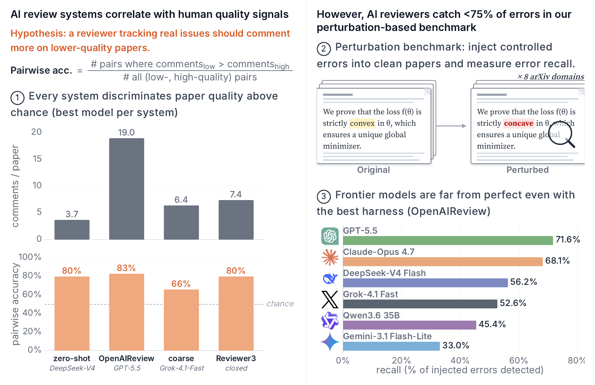

We benchmark four AI review systems across six models on real papers. The best configuration separates weak from strong papers 83% of the time, 91% of its comments flag a real issue, and it catches 72% of the errors we plant. AI review is useful today and still has clear room to improve.
In our first post, we argued that AI-assisted reviewing is necessary, and we named one open problem above all: we had no good way to evaluate an AI review. How do we know whether a review is any good?
Since then, a new class of AI review systems has appeared. They do more than send one prompt to a model. They split the paper, keep track of context, run several agents, and return a list of comments, each tied to a passage of the paper. There are many stories about how helpful they are, and very few measurements. In this post, we describe our new paper, which measures them in three ways.

We compare four systems. Zero-shot gives the whole paper to a model in a single prompt. OpenAIReview, our open-source system, reads the paper in order and keeps a running summary of its definitions, equations, and claims. coarse is an open-source system with one agent per section and a final editing pass. Reviewer3 is a commercial system that we can only use as a whole.
The three open systems can run on any model, so we test each of them on two frontier models (GPT-5.5 and Claude Opus 4.7) and four cheaper ones. This lets us separate two questions that are usually mixed: how much comes from the model, and how much comes from the system around it?
One disclosure before the results. OpenAIReview is our own system. We release the benchmark so that others can check our numbers and add their systems.
A paper has no gold label for quality. So we take papers from ICLR and NeurIPS at the two ends of four signals: citations, awards, review scores, and a combination of them. For example, we compare award papers with rejected papers that were never published elsewhere. We then ask a simple question. Given one weak and one strong paper, does the system write more comments on the weak one?
Every system does better than chance. The best configuration, OpenAIReview with GPT-5.5, is right for 83% of the pairs. Reviewer3 and the best zero-shot setup both reach 80%, and coarse reaches 66%. The pattern also holds when we count only major and moderate comments. No system was trained for this task.
The comments are mostly correct. A count says nothing about whether a comment is right. So we sampled 300 comments and had six models from different companies judge each one, with a human check on a sample and on every contested case. For OpenAIReview with GPT-5.5, 91% of the comments flag a real issue. Reviewer3 is at 83%, zero-shot at 70%, and coarse at 64%.
Real papers do not come with a list of their errors, so the first two tests cannot say how many errors a system misses. For that, we plant errors ourselves. We take 74 arXiv papers from eight fields, from econometrics to genomics, and inject four kinds of errors into their LaTeX source: local math edits such as a flipped sign, false claims, broken reasoning, and flawed experimental design. Then we check whether a review flags each one.
| System (best model) | Weak vs. strong | Correct comments | Planted errors caught |
|---|---|---|---|
| OpenAIReview | 83% | 90.7% | 71.6% |
| Zero-shot | 80% | 70.3% | 59.8% |
| Reviewer3 | 80% | 82.7% | 26.5% |
| coarse | 66% | 64.0% | 20.7% |
The strongest configuration catches 71.6% of the planted errors. That is a strong result, and it also means that more than one error in four gets through. Reviewer3 and coarse return only 5 to 10 comments per paper by design, so this test understates their value as reviewers.
The system matters as much as the model. With the same model, GPT-5.5, a single prompt catches 59.8% of the errors and OpenAIReview catches 71.6%. A system can also hurt. On DeepSeek-V4-Flash, coarse lowers recall from 31.0% to 20.7%, while OpenAIReview raises it to 55.8%. A stronger model alone is therefore an incomplete answer.
The gains come from errors that need context. OpenAIReview improves most on false claims, broken reasoning, and experimental flaws, which a reader can only catch with the rest of the paper in mind. On local math edits, it does about as well as a single prompt (47% against 46%). These small slips remain the hardest errors for every system.
Models find different errors. Different models under the same system comment on different paragraphs. Together, the six models catch 83.3% of the planted errors, 11.7 points more than the best single model. This is an upper bound, since it keeps every comment from every model, but it shows what a good ensemble could reach.
AI and human reviewers look at different things. On papers with public human reviews, AI and humans flag mostly different paragraphs. Humans write 80% of the comments on novelty, scope, and motivation. AI writes most of the comments on claims, experiments, and mathematics. The two are complementary, which supports using AI review next to human review.
Citations, awards, and review scores are noisy signals of quality. We compare only the two ends of each signal, so our results are about telling clearly weak papers from clearly strong ones. They say nothing about fine ranking, and they are no basis for accept or reject decisions.
Recall on planted errors rewards systems that write more comments, and it does not measure whether a system puts the most important issue first. The benchmark also leaves out everything that has no clear ground truth, such as novelty and significance.
The benchmark is open, like the system. If you build an AI review system, you can run it on the same papers and compare. We will keep adding systems, models, and fields.
A year ago, the question was whether AI can review a paper at all. The question now is how much of the review it should carry, and for which parts. That question finally has numbers behind it.